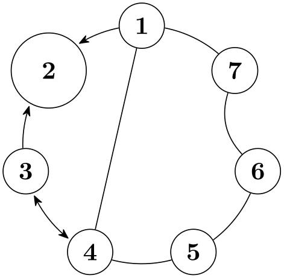

The TikZ and PGF Packages
Manual for version 3.1.10
Graph Drawing
35 Graph Drawing Algorithms: Edge Routing¶
by Till Tantau
-
Graph Drawing Library routing ¶
\usegdlibrary{routing} %
LaTeX
and plain
TeX
\usegdlibrary[routing] %
ConTeXt
This library contains algorithms for routing edges through a graph.
-
/graph drawing/necklace routing=⟨string⟩ ¶
Bends all edges of a graph that lie on “necklaces” along these necklaces. Some graph drawing algorithms lay out some or all nodes along a path, which is then called a necklace. For instance, the simple necklace layout places all nodes on a circle and that circle is the “necklace”. When the necklace routing edge routing algorithm is selected, all edges that connect subsequent nodes on such a necklace are bend in such a way that the “follow the necklace path”. In the example case, this will cause all edges that connect adjacent nodes to become arcs on of the circle on which the nodes lie.
Note that local edge routing options for an edge may overrule the edge routing computed by the algorithm as in the edge from 6 to 7 in the example.
Example
